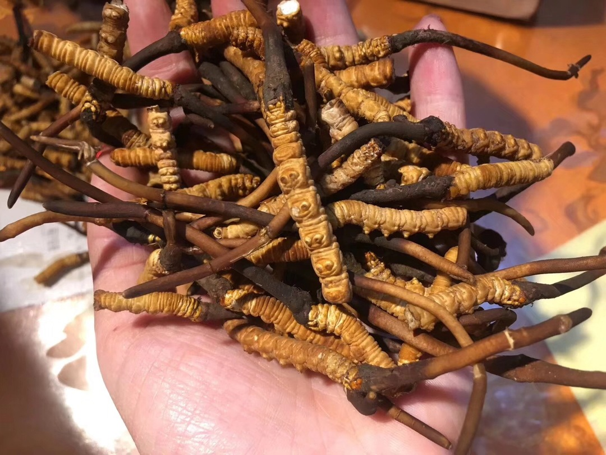
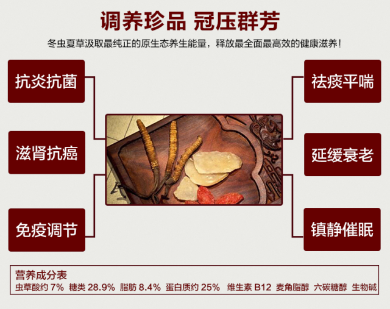
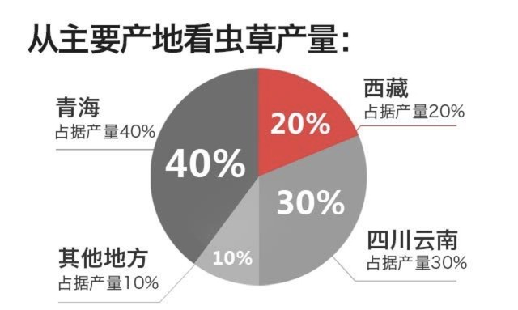
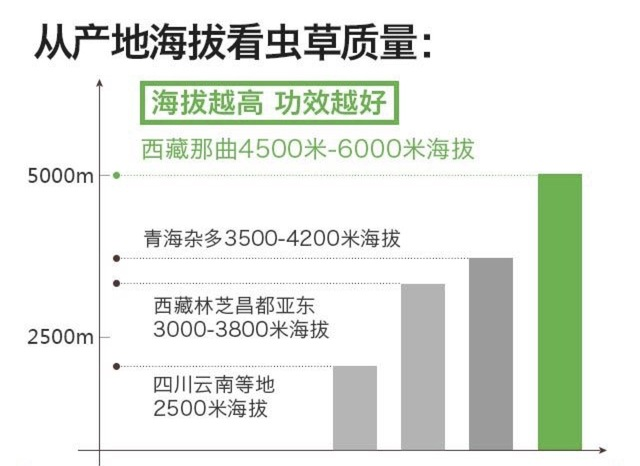
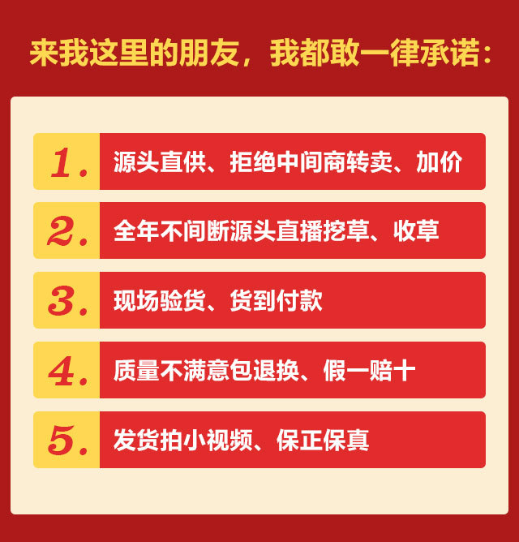
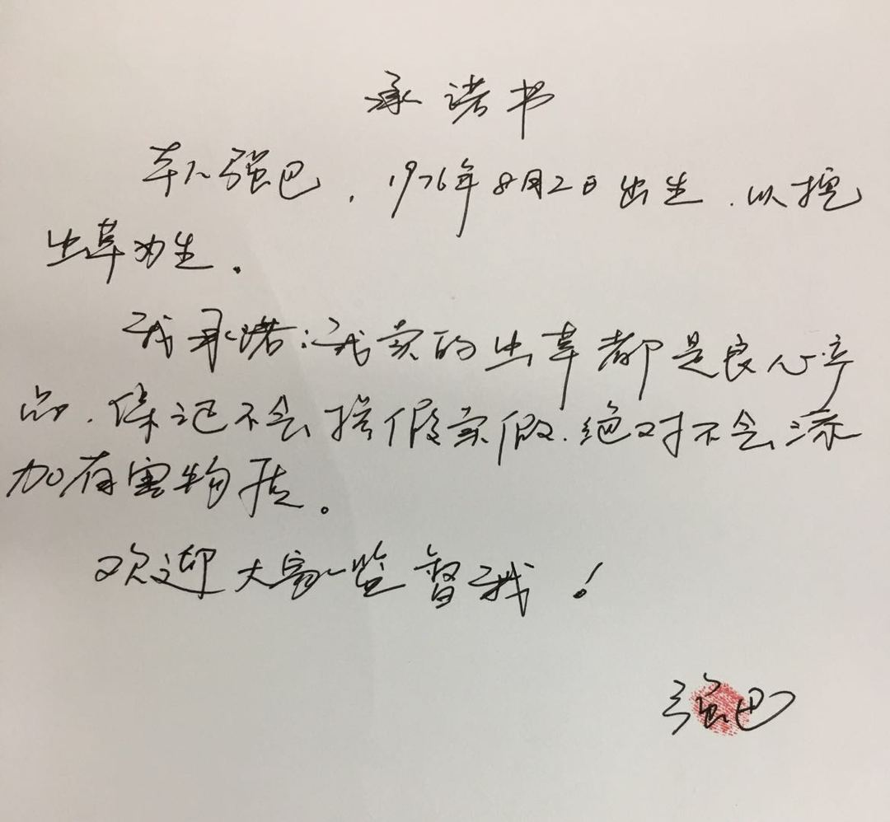
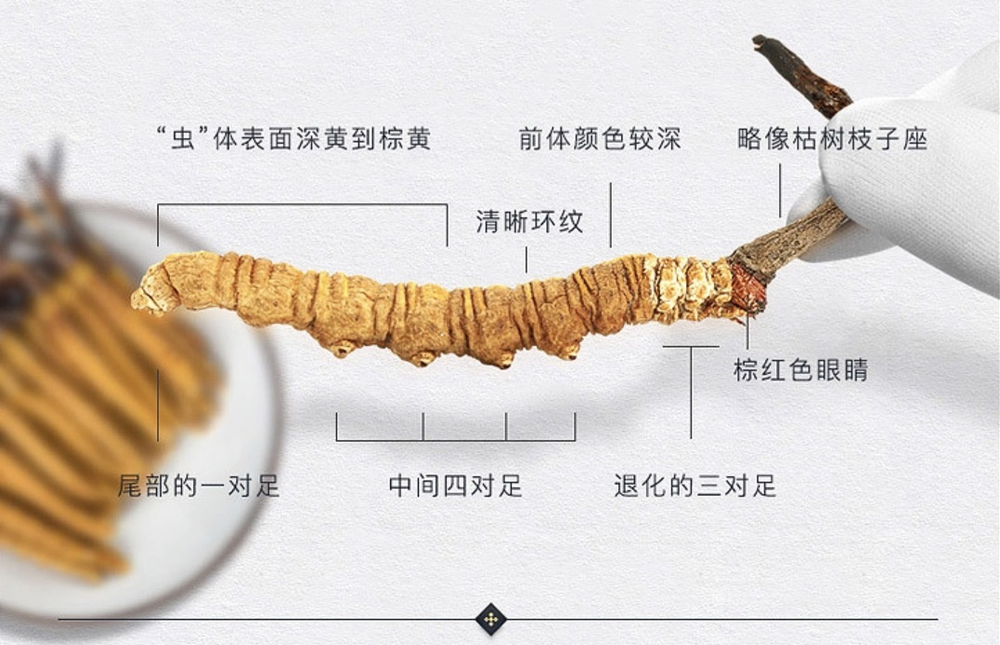
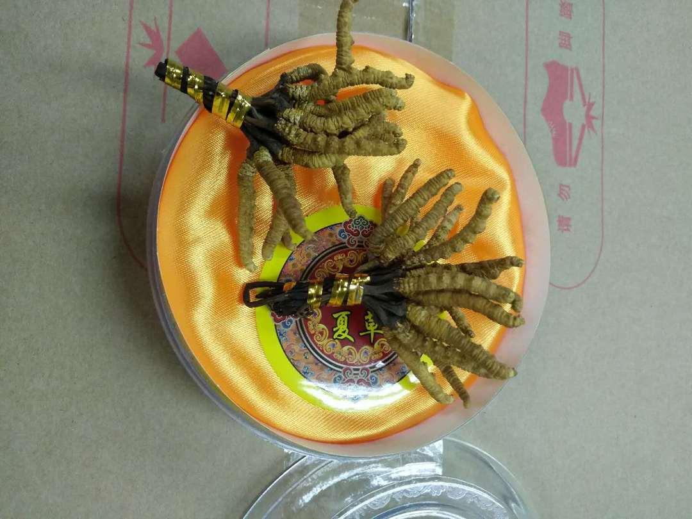
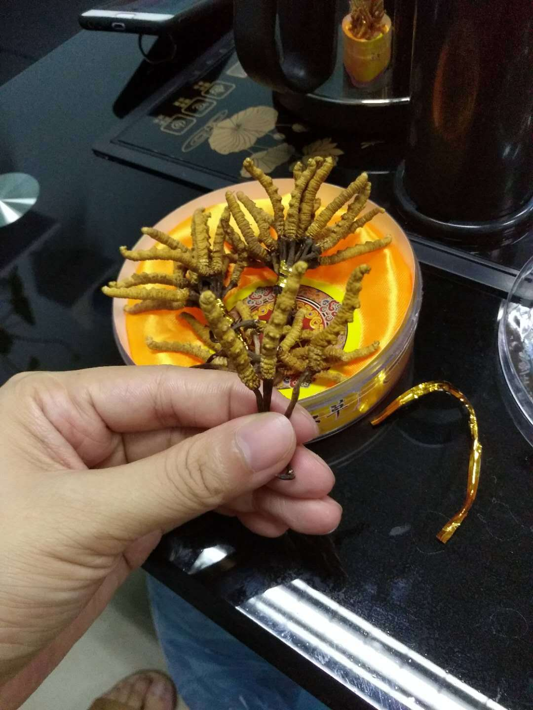

资深虫草人 全面解读
冬虫夏草功效作用
来源：健康栏目
55237 人参与 13759 评论
冬虫夏草
阴阳双补 中药之王
大家好！我叫强巴，西藏那曲资深虫草人。家里三代行医，从小与中药相伴，8年前有缘来到西藏那曲，接触到纯正野生的冬虫夏草，本着将那曲野生冬虫夏草带给有需要人的愿心，开启西藏那曲虫草搬运工的人生。
接触虫草这行已经八年了，经常有朋友向我了解虫草作用与食疗方法。以前也分享过一些相关文章，只占虫草行业得冰山一角。今天我特定写下这篇更全面、更系统的虫草知识让更多人可以全面的了解虫草的功效作用，也希望大家收藏、转发，帮助更多有需要的人。
文章比较长，
如果希望跟我直接交流的，
加我微信即可。
我的微信号：gdt556 (←长按可复制)
每天加微信的前10名 免费领取价值3000元虫草礼包1份
为了方便大家阅读，
我先把整体内容列出来，主要如下：
1、虫草有什么功效？
2、虫草怎么吃最有营养出效果？
3、哪里的虫草最好？
4、为什么有的虫草那么贵？
5、科普---如何挑选虫草？
一、虫草有什么功效？
古人曾说：" 宁要虫草一把，不要金玉满车 "，冬虫夏草能对人体起到全面的保健作用，具有很高的食疗功效，自古以来有"仙草"的美称，作为古法养生佳品与千年人参、鹿茸一起列为珍稀贡品。在古代，不但宫廷皇族天天进食虫草，连官宦家庭也经常服用，这也是皇族和官宦成员长寿的原因。
早在1757年《本草从新》中就有"冬虫夏草甘平保肺，益肾，补精髓，止血化痰，已劳咳，治膈症皆良"的记载。冬虫夏草，冬天为虫，夏天为草，阴阳共补，男女均可食。
借助现代医学的各种检测手段，发现冬虫夏草体内含有上千种对人体有益的化合物，而且每种化合物之间的比例十分奇妙。
冬虫夏草好处很多，三天三夜也说不完。虫草对特殊人群，某些特殊情况也有很不错的效果，这些都是吃过的朋友反馈过来的结果。
虫草能对人体起到全面的保健作用
具有很高的食疗功效
针对不同人、不同情况功效
可以加我微信详细了解
我是西藏那曲资深虫草师
我的微信号：gdt556 (←长按可复制)
二、虫草怎么吃最有营养出效果？
虫草是个好东西，你吃得对，自然事半功倍。
我精选3个级别的虫草
朋友们可以按需采购，不花冤枉钱！
//一级虫草（2根/克）
推荐理由：个体最大,营养价值最高，适合送礼和经济条件好的朋友日常保健。
//二级虫草（3根/克）
推荐理由：品相和品质兼具，可以满足日常食用和送礼需求。
//三家虫草（4根/克）
推荐理由：自吃性价比最高，适合家庭长期保健食用。
不同人，不同情况需要不同的吃法。我的朋友圈每周定期都会分享很多营养食谱，朋友们看了都有好评反馈，效果很有针对性，可以加我微信详细观看，我的朋友圈都是无偿开放的。
我的朋友圈
每周都会定期分享 专业的虫草食谱
教你事半功倍地吃出虫草的效果
吃出虫草的花样美味
我是西藏那曲资深虫草师
我的微信号：gdt556 (←长按可复制)
三、哪里的虫草最好？
冬虫夏草的药效主要由虫草质量决定的。虫草质量好药效自然就佳。
虫草好不好，必须从这三个方面做综合判断：产地——海拔——营地。
虫草主要产地有：西藏、青海、四川。不同产地的虫草营养价值不同。从大方面讲，青海产量第一，但最好的虫草在西藏那曲，那曲虫草被誉为"黄金草"，国家地理标志保护产品。连续数年蝉联虫草冠军宝座，优良的品质获得世界的认可。
这么多年来接触过无数吃虫草的人，几乎98%的人都说吃了那曲的虫草，身体改变最大。
↑那曲高海拔虫草的外观特点就是粗、肥、饱满大根、颜色金黄↑
西藏那曲冬虫夏草之所以品质好，不仅仅在于其神奇的生长过程，更是因为它凝聚了青藏高原的巨大付出。
那曲虫草生长在青藏高原之巅的羌塘大草原，海拔4500~6000米。羌塘大草原位于昆仑山脉、唐古拉山脉和冈底斯山脉之间，该土层深厚微量元素多，消融的雪水中富锶含碱性负离子，富小分子团，给冬虫夏草的生长给与充足的自然营养。且日照昼长夜短，紫外线日照充足，赋予冬虫夏草旺盛生命力。
独特的土壤条件加上独有的气候条件，使得这里的虫草" 草色泽黄净 ， 虫体肥大 ， 营养价值高 ，还有股 浓酥油的香味 "。要是能吃到顶级那曲虫草，营养发挥1根可以顶普通虫草6根。
↑那曲野生高海拔虫草虽然裹着土，依然透着精气↑
如果你想了解更多那曲虫草知识，学习了解虫草好坏的鉴定方法，不妨加我微信一起探讨。我朋友圈的知识都是无偿开放的。
我是西藏那曲资深虫草师
8年来只专注于一件事
将那曲野生冬虫夏草带给世界,
极力造福更多人
希望每一个人都健康长寿！
我的微信号：gdt556 (←长按可复制)
四、为什么有的虫草那么贵？
多年来我们的每一根虫草都来自西藏那曲高海拔区域，从当地藏民手中直接收购，把价格压缩到市场价的50%，惠泽苍生，尽全力让虫草远离"天价"的标签，但要很便宜，绝对没办法。因为真相是：
1、野生虫草产量少
每年吃虫草的人有增无减，但虫草本身就是珍稀物种，没培育技术可以替代，纯靠大自然野生，产量有限。
2、虫草贵，用命换
西藏那曲海海拔高，虫草不好找，需要弯腰或趴着、跪着，在地上一点点前进找虫草，一天下来脚又酸又麻，真的很累。常年在4200米雪山上匍匐挖草，寒气入体。我们藏民都有不同程度的腿疾。
3、虫草极其难挖
现在山上的虫草没以前好挖了，以前一天下来可以挖三、五十根，近几年虫草越来越少，一天下来也就挖二十根左右，经验不足的人有时一天下来都找不到十根。好虫草是越来越少了！
一望无际的高原，一根几毫米的草头混在方圆几十公里的草海里，跟草地颜色几乎一样，没经验、没运气别想找得到。
4、冬虫夏草，中药之王
冬虫夏草能对人体起到全面的保健作用，具有很高的食疗功效。几乎生病、调养、术后调养的人，稍微有点条件的，都懂得要吃虫草来补身调养，虫草越好营养价值越高。
我们发往全国的虫草， 每一根都是藏民辛苦采挖 ， 直接采收 ， 没有任何中间环节 ，每一根都由我精心挑选，绝无掺杂其他产地品种或次级虫草，保证所有冬虫夏草「地道纯正」。凭借着口口相传以及对虫草质量严格把控，甘丹堂的虫草逐渐让更多人喜欢， 朋友分享过来的客户我们占很大的比重 。
 我们设立「条子制度」监控，确保客户于不同时间均可购买同级数的虫草。
订购方式
客服订购：
gdt556（长按可复制）在微信上告诉我你的购买信息。
顺丰包邮：
24小时内发货，顺丰包邮，确保您能尽快收到虫草，尽早食疗。
货到付款：
为了让大家放心，您可以收货后开箱验货，满意再付款，不满意不签收！我们家虫草又正又大，我有绝对的自信。
咨询服务：
gdt556 （长按可复制）咨询一起冬虫夏草事宜，让您买到货真价实物美价廉的好虫草！
终身售后：
购买冬虫夏草的朋友，既可以成为我们的终身VIP客户，享受活动减价，辅助食疗，上等虫草优先购买等服务。
有疑问欢迎随时加我微信： gdt556 （长按可以添加）咨询
五、科普---如何挑选虫草？
虫草最常见的伪劣手段是：发牙签草、水银增重草、空心草、瘪草、陈草给你。这些只要你花些心思，认真观察自然能看的出来。
根据我多年经验，总结出三个招数，可以确保虫草质量！
一是捏虫体，要硬邦邦的，不能空、软。
二是听掰断的声音，但是你没买回来之前，人家肯定不允许你掰。
三是闻虫草的味道，那曲虫草稍带有股酥油的香味。
如果你不清楚自己买到手的虫草真假与否，欢迎随时找我，免费帮你鉴定。
我是西藏那曲资深虫草师
8年来只专注于一件事
将那曲野生冬虫夏草带给世界,
极力造福更多人
希望每一个人都健康长寿！
我的微信号：gdt556 (←长按可复制)
你在虫草方面，有任何需要了解的问题的时候，第一个在微信里找我交流。我也会因为多了你这样一个不同地域的朋友，而获得新的眼界。
热门评论
小爱
2018-08-23
感谢楼主，吃了你家虫草我妈的失眠已经好很多了，整个人的精神都非常好，希望我妈身体健康，也祝楼主生意兴隆！
推荐 1081 / 回复
badtree
2018-08-23
本人亚健康严重，了解过虫草后一直在楼主这里购买服用，效果明显，我还会坚持下去的，希望虫草能给我身体带来更多好处
推荐 889 / 回复
花开盛夏
2018-08-23
老板，谢谢你，你家虫草很好，妈妈说比她自己在药店买的要好很多哦，还便宜，以后有需要，还会找你，希望品质不要变哦。
推荐 958 / 回复
长乐
2018-08-23
听说虫草可以抗癌？是真的吗？
推荐 756 / 回复
此处无声
2018-08-23
以前腰酸背痛还经常跑厕所，后来去看才知道肾虚，医生说我的比较严重，给我配一堆中药和西药，后来我朋友给我介绍虫草，我已经吃了一个多月了，效果很好，不会经常跑厕所了，腰也不酸了，虫草真是个好东西
推荐 865 / 回复
长路漫漫
2018-08-23
三高人群可以吃虫草吗?我爸妈都有三高，困扰多年，想了解这个虫草有用的话，想买点给他们试试
推荐 739 / 回复
Decision
2018-08-23
感谢楼主，吃了你家虫草我妈的失眠已经好很多了，整个人的精神都非常好，希望我妈身体健康，也祝楼主生意兴隆！
推荐 578 / 回复
初
2018-08-23
我爸得了肺病有段时间了，听朋友说虫草好，就买了点给他吃，刚开始抱着不太大的希望的，但是我爸吃了之后确实没那么严重了，看着他一天天好起来，我心里也高兴，谢谢虫草也谢谢楼主！
推荐 982 / 回复
年年有余
2018-08-23
一直在楼主这里买虫草给家里人保健，每个人体质都挺好，很少生病！
推荐 1673 / 回复
风雨中人
2018-08-23
前两天收到虫草了，包装很好，草也不错，接下来就期待效果了
推荐 868 / 回复